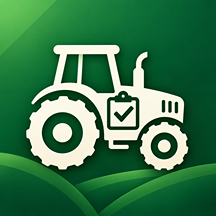

Farm Machine Log
Farm Machine Log is a simple equipment management app for tracking farm machines, maintenance tasks, service history, costs, photos, and operating records.
Add your tractors, harvesters, sprayers, cultivators, and other farm machines, then record work, fuel, maintenance, repair, inspection, and other activities in one place.
Each machine can include its name, category, manufacturer, model, memo, representative photo, maintenance tasks, and history of machine logs.
This app is useful for farmers, agricultural operators, and small farm businesses that want a simple way to keep equipment records without using spreadsheets, paper logs, or complicated fleet management systems.
Features
- Manage tractors, harvesters, sprayers, cultivators, and other farm machines
- Add a name, category, manufacturer, model, memo, and representative photo for each machine
- View the latest recorded hour meter for each machine
- Track total recorded costs for each machine
- Create maintenance tasks for individual service items
- Set maintenance intervals based on operating hours
- Set the next due hour for each maintenance task
- Track last completed hour values for maintenance tasks
- See maintenance status such as Maintenance OK, Due Soon, and Overdue
- Record work, fuel, maintenance, repair, inspection, and other logs
- Add a date, hour meter, cost, memo, and optional photo to each log
- Edit saved machine logs
- Delete machine logs when no longer needed
- Attach photos to maintenance, repair, inspection, and other records
- Complete maintenance tasks and automatically update the next due hour
- Record up to 2 farm machines for free
- Create up to 5 maintenance tasks per machine for free
- Manage unlimited farm machines with Pro
- Manage unlimited maintenance tasks with Pro
- Export machine logs and maintenance task data as CSV files
- Export all-machine CSV data with Pro
- No account registration required for the main app features
- Machine data and attached photos are stored locally on your device
- Simple and practical design for everyday farm equipment management
Frequently Asked Questions
-
Q: What does this app do?
A: Farm Machine Log helps you manage farm equipment, maintenance tasks, machine logs, hour meters, costs, photos, and service history in one place.
-
Q: Who is this app for?
A: This app is designed for farmers, agricultural operators, and small farm businesses that want a simple way to track farm machines and maintenance records.
-
Q: What kinds of machines can I manage?
A: You can manage tractors, harvesters, sprayers, cultivators, rice transplanters, and other farm machines.
-
Q: What information can I save for each machine?
A: You can save the machine name, category, manufacturer, model, memo, representative photo, maintenance tasks, and machine logs.
-
Q: What kinds of logs can I record?
A: You can record work, fuel, maintenance, repair, inspection, and other machine activities.
-
Q: What information can I add to a machine log?
A: Each log can include a date, type, title, hour meter, cost, memo, and optional photo.
-
Q: Can I attach photos to machine logs?
A: Yes. You can attach a photo to a log to keep a visual record of maintenance, repairs, inspections, or other work.
-
Q: Can I add a representative photo for each machine?
A: Yes. Each farm machine can have a representative photo to make it easier to identify in the machine list and detail screen.
-
Q: What are maintenance tasks?
A: Maintenance tasks are separate service items such as engine oil changes, air filter cleaning, greasing, belt inspections, tire pressure checks, blade inspections, and other recurring maintenance work.
-
Q: How does maintenance status work?
A: The app compares the latest recorded hour meter with the next due hour for each maintenance task and shows statuses such as Maintenance OK, Due Soon, or Overdue.
-
Q: What happens when I complete a maintenance task?
A: The app records the completed hour, updates the last completed hour, calculates the next due hour when an interval is set, and creates a maintenance log.
-
Q: Can I edit a machine?
A: Yes. You can update the machine name, category, manufacturer, model, memo, and representative photo.
-
Q: Can I edit a machine log?
A: Yes. Tap a saved log to edit its date, type, title, hour meter, cost, memo, or photo.
-
Q: Can I delete a machine log?
A: Yes. Machine logs can be deleted when they are no longer needed.
-
Q: How many machines can I manage for free?
A: Free users can manage up to 2 farm machines. Pro unlocks unlimited farm machines.
-
Q: How many maintenance tasks can I create for free?
A: Free users can create up to 5 maintenance tasks per machine. Pro unlocks unlimited maintenance tasks.
-
Q: What does Pro include?
A: Pro includes unlimited farm machines, unlimited maintenance tasks, and all-machine CSV export.
-
Q: Can I export my machine data?
A: Yes. You can export machine logs and maintenance task data as CSV files.
-
Q: What information is included in the machine log CSV file?
A: The machine log CSV includes machine name, category, manufacturer, model, date, log type, title, hour meter, cost, and memo.
-
Q: What information is included in the maintenance task CSV file?
A: The maintenance task CSV includes machine name, category, manufacturer, model, task name, interval hours, next due hour, last completed hour, status, and memo.
-
Q: What happens if my Pro subscription ends?
A: Your saved farm machine data is not deleted. Pro-only features, including unlimited machines, unlimited maintenance tasks, and all-machine CSV export, require an active Pro subscription.
-
Q: Are my machine records deleted if I cancel Pro?
A: No. Your saved machine records, maintenance tasks, logs, and photos remain stored on your device. Resubscribing restores access to Pro features.
-
Q: Where is my data stored?
A: Your machine records, maintenance tasks, logs, and attached photos are stored locally on your device.
-
Q: Do I need to create an account?
A: No. An account is not required to use the main machine management and logging features.
-
Q: Do I need an internet connection?
A: Recording, editing, reviewing, and managing farm machine data can be done offline. An internet connection may be required to load subscription products or complete in-app purchases.
-
Q: Does the app connect to farm machinery automatically?
A: No. Farm Machine Log is a manual equipment record and maintenance tracking app. It does not automatically connect to tractors, telematics systems, or machine sensors.
-
Q: Does the app automatically read hour meter values?
A: No. Hour meter values are entered manually when creating or editing machine logs and maintenance records.
-
Q: Is this app a replacement for manufacturer maintenance instructions?
A: No. Farm Machine Log is a record-keeping and maintenance tracking tool. Always follow the maintenance schedule, safety instructions, and service recommendations provided by the machine manufacturer.
📩 Contact
If you have any questions or encounter issues, feel free to contact us:
← Back to Support Center